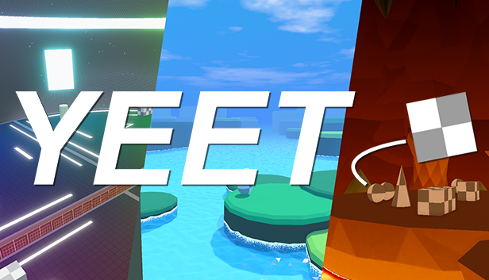
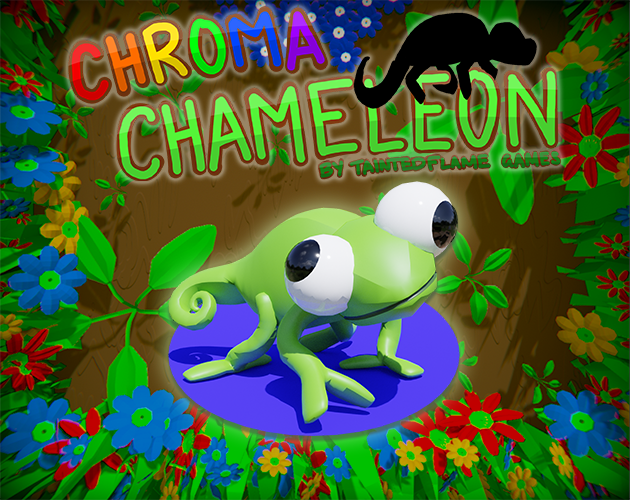
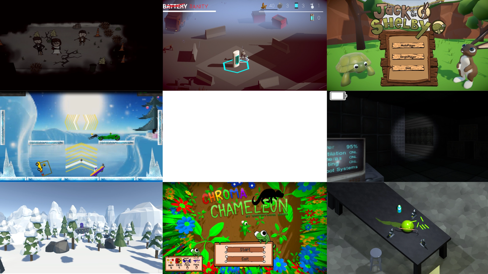

Curated Project Highlights
Deep dives into selected games, XR systems, and research engines I've shipped or maintained.
For a complete list of experiments and smaller utilities, see GitHub repositories.

Embodied Conversational Agents
A research project exploring the use of embodied conversational agents in VR. I focused on dataset creation and reviewing the literature.
XR Super Resolution
A stereoscopic super resolution algorithm for XR headsets, utilising a combination of RGB, depth, and motion vector data to improve resolution. I focused on dataset creation and reviewing the literature.


YEET
YEET is a VR/flatscreen cross platform game that focuses on fast paced multiplayer physics interactions. I contributed to the game design, implementation, 3D modeling, environment design, texturing, and community management.
Impossible Spaces
The technical engine behind my 2025 research. This project solves the "small-room" VR problem by discretely teleporting the user to a new location, enabling infinite walking in finite spaces. I focused on implementing the portal system and the museum 3D environment, including creating some of the 3D models from scratch.


Chroma Chameleon
A color-switching puzzle game designed in 48 hours for KiwiJam 2022. I focused on game design, implementation, and managed our team of 9.
Other Games
Over the years I've worked on various smaller projects, including videogames. Many of these have been the result of game jams/hackathons. In particular, they've helped me to develop my skills in programming, visual design, UX, and to experience working on complete projects.
